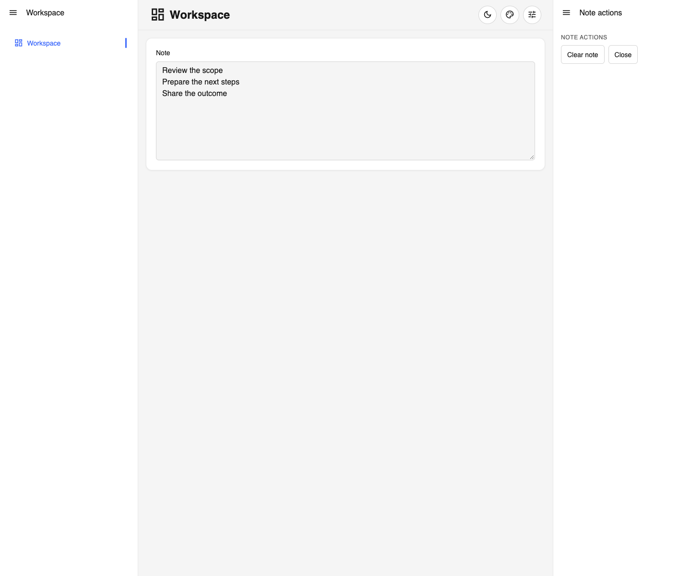
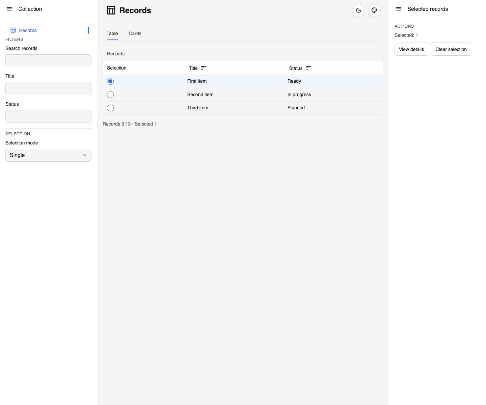
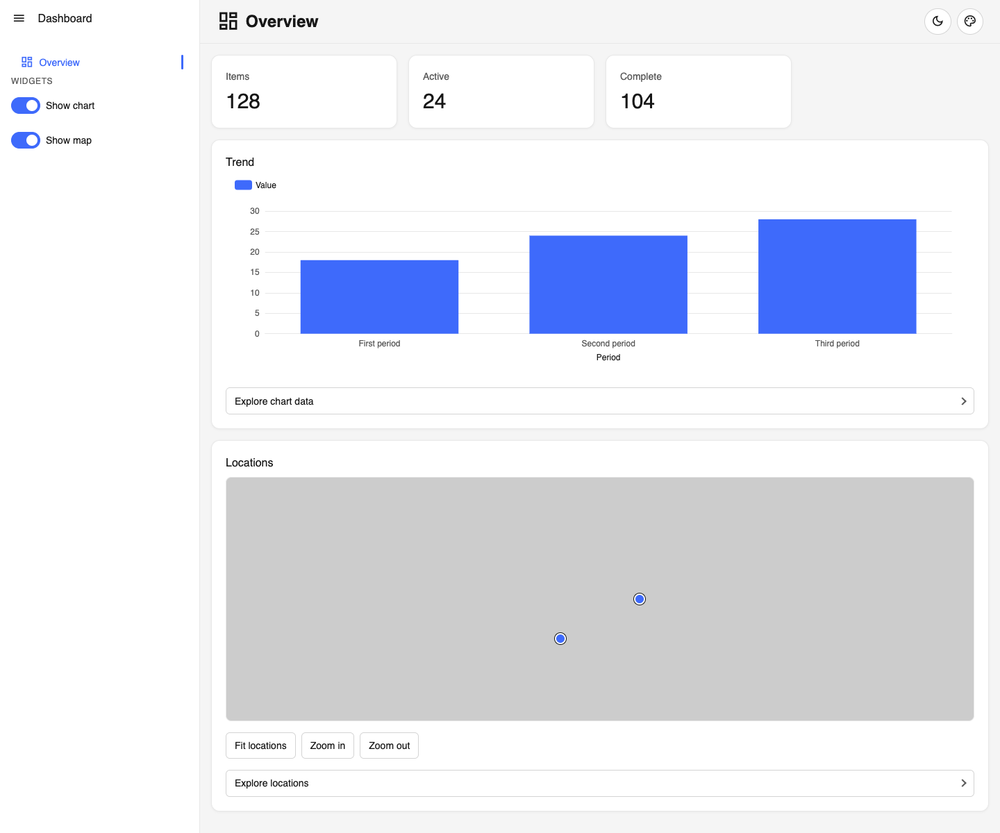

A navigation shell with imported content and optional sidebar controls.

Save this JSON as app-config.json, then create the starter.
npx symbiote-agui templates create workspace my-workspace --config ./app-config.jsonFilters, table/card views, shared selection, and selected-item controls.

Save this JSON as app-config.json, then create the starter.
npx symbiote-agui templates create collection my-collection --config ./app-config.jsonPrepared metrics with chart and map regions that mount only when enabled.

Save this JSON as app-config.json, then create the starter.
npx symbiote-agui templates create dashboard my-dashboard --config ./app-config.jsonScreenshots use illustrative data. Creating a starter without configuration keeps its datasets empty.